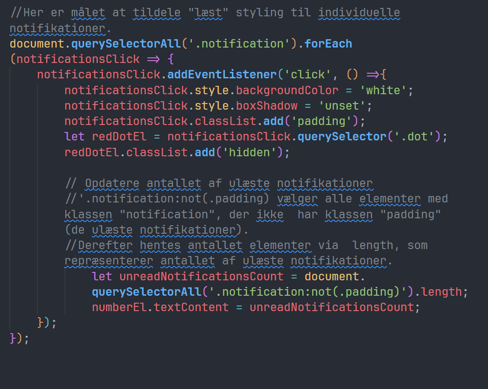

JavaScript
For at tilføje funktionalitet til siden, bruges vanilla
JavaScript. Først fanges de relevante HTML elementer fra DOM’en
med document.querySelector og querySelectorAll, begge skal bruges
fordi i nogle tilfælde er det nødvendigt at ramme flere HTML
elementer med den samme class, og loope igennem dem med forEach.
Hvor det ikke er intentionen at bruge flere elemtenter på samme
tid, er det querySelector tilstrækkelig.
Den første funktions formål er at loope igennem de ulæste
notifikationer når buttonEl trykkes, opdatere stylingen, fjerne de
røde prikker ved at tilføje klassen hidden, og optarere
tekstindholdet i numberEl, for korrekt at afspejle mængden af
ulæst notifiaktioner.

Den sidste del af JavaScriptet tilføjer en eventListener til hver
notifikation, så man har mulighed for at markere enkelte
notifikationer som ”læst” ved at klikke på dem. Når en
notifikation klikkes, ændres den styling til ”læst”, altså den blå
baggrundfarve og røde prik fjernes. Derefter tæller koden igen
hvor mange ulæste notifikationer der er, og opdaterer antallet i
”notifications” i toppen af siden.
Padding klassen er hvad der adskiller de læste og ulæste
notifikationer, og gør at det er muligt at opdatere tælleren
korrekt. Ved at tilføje klassen padding notifikationer, bliver de
ikke længere talt med i ulæste notifikationer.
Document.querySelectorAll('.notification:not(.padding)') vælger
altså kun de notifikationer, som ikke har klassen padding, hvilket
gør at der kan holdes styr på, hvor mange notifikationer der
stadig er ulæste.